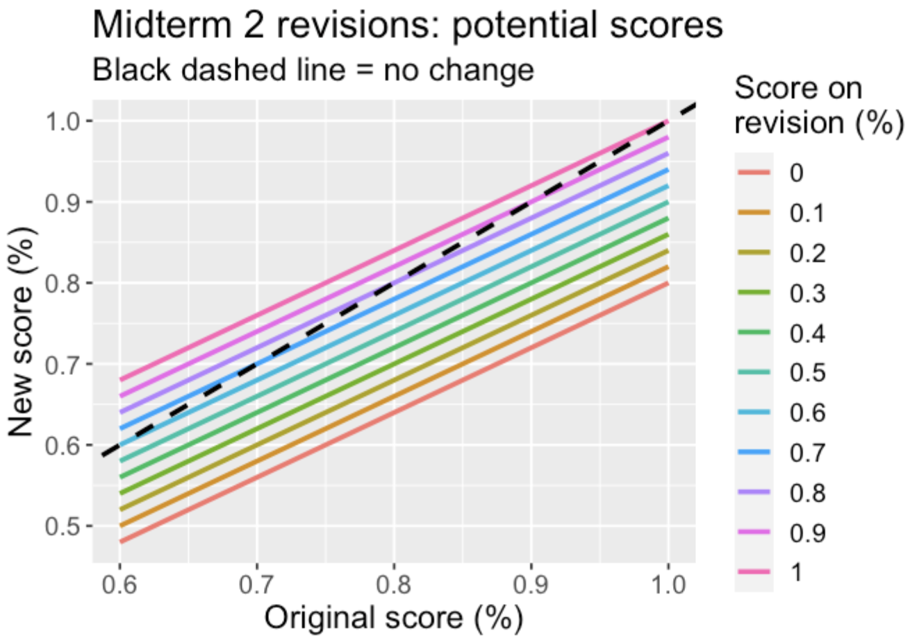

Exams
Midterm 1
Thursday, 10/12 from 6-8pm in LIB 201. We will start promptly at 6pm, so please plan to arrive a bit early.
You are allowed one, single-sided 8.5x11 cheat sheet, either typed/printed OR written in pen.
You may write definitions, theorems, properties, distributions, and other “factual” type of information. You are not allowed to write any worked out examples or problems.
The cheat sheet will be submitted alongside your midterm.
Besides your cheat sheet, no other outside resources may be used. This includes a calculator.
The midterm will cover material through October 6 (through and including expectation and LOTUS).
Questions will be similar in conceptual difficulty to class activity problems and these practice problems. Solutions will be posted beginning of Week 5.
- It is not my suggestion to only use these practice problems as your study guide. It would be good to skim through the readings from the previous weeks, return to homeworks, see the feedback Prof. Tang left on Canvas, etc.
Revisions
You may choose to revise one problem (for multi-part problems, “one problem” includes all the parts of the problem!)
Bring to class Friday, 10/20/23:
Original midterm (please do this regardless of if you are revising or not!)
An attached sheet that clearly denotes which problem you are revising, and:
Your new solution to the problem
What was not correct in your original solution
Please do not talk to others about your revision! You are welcome to come see Prof. Tang in office hours or schedule outside time to discuss the midterm.
Well done all!
Midterm 2
Midterm 2 will feature both an in-person component and a take-home component. Some aspects of the take-home component will require R, whereas the in-person part will not.
Material through the end of Week 8 (up to and including MGFs) is fair game for this midterm. The exam will be lightly cumulative, but with emphasis on material covered since the first midterm.
The grading will be as follows: score on in-person component + score on take-home = final score on Midterm 2.
I will host a review session on Sunday, 11/12 from 3-5pm in Warner 105!
Practice problems here! Solutions will be posted beginning of Week 10.
Update 11/09/23: I accidentally included a problem that requires topics we have not covered yet. I have now removed it from the practice problems.
In-person component
6-8 pm on Thursday, 11/16/23 in Warner 104
Format and Resources
You are allowed one, double-sided 8.5x11 cheat sheet.
You may write definitions, theorems, properties, distributions, and other “factual” type of information. You are not allowed to write any worked out examples or problems.
You should write down all of the PMFs/PDFs for the “common” distributions, along with expected values, variances, MGFs, and CDFs if we have learned them or seen them in the textbook
The cheat sheet will be submitted alongside your midterm.
Questions on the in-class exam will be similar in difficulty and scope to questions from both Daily Assignments and Class Activities.
Take-home component
Available from 8:00am on Friday, 11/17/23 through 11:59pm on Sunday, 11/19/23.
We will not have class on Friday, 11/17/23.
- The take-home is assigned in such a way to give flexibility in travel and so you can fully enjoy your Thanksgiving break starting at 2pm on Friday (if you so choose). Therefore, I hope that some of you use the usual class time to work on the take-home.
Format
- The take-home will be made available on Canvas. You will have 3 hours from opening the assignment to complete the take-home component of the midterm.
- It is your responsibility to make sure that everything is uploaded in time.
- Your solutions should be neatly written or typed. If you scan a handwritten assignment, be sure to review the legibility of your scan and upload before you submit your assignment.
- Questions on the take-home exam will be similar in difficulty and scope to questions on homework.
Resources
You should e-mail Prof. Tang with clarifying questions only! I will do my best to answer within a few hours of you sending the email, but you should expect a longer wait if you send an email between the hours of 8pm and 8am.
You may use any notes you’ve taken for this class, your work on any previous homework, in-class, and daily assignments, any solutions posted to the course Canvas site, comments you’ve received on homework or assignments through Canvas, and Blitzstein’s textbook/videos.
You may not use any other resources other than those listed above. You may not seek answers to exam questions online or ChatGPT, or in other textbooks, and may not work with others on the exam.
Revisions
There is an opportunity to earn points back on the second midterm, but if you take advantage of the opportunity, there is the potential of receiving an overall lower score on the midterm. Details:
From 12/11 at 5:00 pm - 12/13 11:59pm, new problems will be made available via Canvas quiz. Upon starting the quiz, will have 60 minutes to submit your solutions.
- Resources for the revision are the same as the resources for the take-home component (see above).
Your updated Midterm 2 score will be a weighted average of your original midterm 2 score and your score on the new problem(s): \[\text{new score} = 0.8(\text{original score}) + 0.2(\text{revision score})\]
Depending on how you do on the revision, your new score may be lower than the original. See this figure:

Find your original score on the x-axis. Then based on how you do on the revision problem (colors), you can find your updated score (y-axis).
You are welcome to “start” the quiz on Canvas and decide to not finish it. I will only grade and update scores for those who submit a solution to the quiz.
Final exam
An opportunity to celebrate all that you have learned this semester!!
The final exam will be in-person on the college-assigned date and time of Thursday, 12/14 from 2-5pm. in WNS 105 (our usual classroom).
Material from the entire semester is fair game and the final is lightly cumulative, but there will be a heavy emphasis on content covered after the second midterm (Week 9 content onward).
Practice problems are available here, with solutions provided on Canvas after our final class. Note that some of these problems are more difficult than I would expect you to be able to do on the final. Practicing on harder problems means you’ll be better prepared for the actual final!
I will also be having office hours on Tuesday, 12/12 from 11:00am-12:00pm, then from 3:30-4:30pm.
Resources
You are allowed one, double-sided 8.5x11 cheat sheet.
You may write definitions, theorems, properties, distributions, and other “factual” type of information. You are not allowed to write any worked out examples or problems.
The cheat sheet will be submitted alongside your midterm.
You will be provided a “distribution sheet” that lists the PMFs/PDFs of the “common” distributions we have covered, along with their expected values and variances.
I will share the distribution sheet with you on the final day of class so you won’t be surprised when you take the exam
- Update 12/11 ~5:00pm: added Multinomial distribution to sheet. Thanks Thomas for reminding me! Note that expectation and variance are not provided for it…
Formulas for MGFs or CDFs will not be provided on this distribution sheet.
You are welcome to write the formulas for other distributions you have encountered in this course on your note sheet.